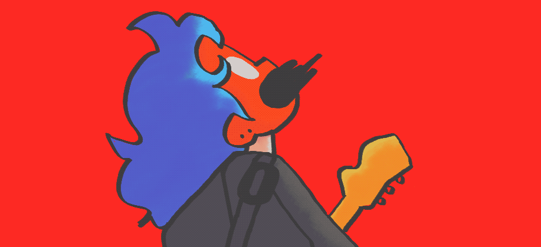

A Game About Slugs
More of an answer to "A Game About Snails" than a sequel. A sweet point-and-click game that runs right in your browser.
Welcome to my humble corner of the web. I'm Erin Lampert — designer, artist, and developer based in northeast Ohio. Hope you enjoy your stay!
I like to draw simple things and even make them move sometimes. Feel free to take a looksie.
